Homes built to endure
Earth-bermed, passive-solar and fortified homes, turnkey or owner-built.
Custom homes, wineries, churches and commercial spaces across Virginia and beyond. Each is designed from the structure out for comfort, durability and a fraction of the usual running costs.
Start a project
Light, air, view and proportion come first. A building should open to its site and its sun, frame the view, and feel right in its proportions before anyone mentions structure.
Our influences are historic buildings, the work of James Gamble Rogers, and the drawings of Frank Lloyd Wright, with their interplay of horizontal and vertical and their decorative motifs. For fifty years we have designed buildings meant to outlast their owners' mortgages and serve their grandchildren. We begin with the land, the sun and the structure. Everything else follows.
Earth-bermed, passive-solar and fortified homes, turnkey or owner-built.

Fast, permit-ready fit-outs for landlords, franchisees and owners: restaurants, retail, offices. Clients include Wegmans, CVS, Domino's, Five Guys and Otoe Casino. From the firm behind Virginia's first stand-alone CVS and Domino's.

Building with an am-cor ferrocement kit? We design around it: site adaptation, permit documents and engineering coordination.
Featured story
A former project manager in Washington, DC, sold his condo and moved to twenty acres of family farmland in the Virginia countryside. With our design, our permit set and our guidance, he managed the build himself: a $1.2 million earth-bermed, passive-solar ferrocement home. Building as owner-builder saved him roughly 20 percent. Compared with what?
“The design and the energy efficiency of our south-facing, earth-bermed home fit the country life we wanted.” — Dawson [placeholder — client's own words to follow]
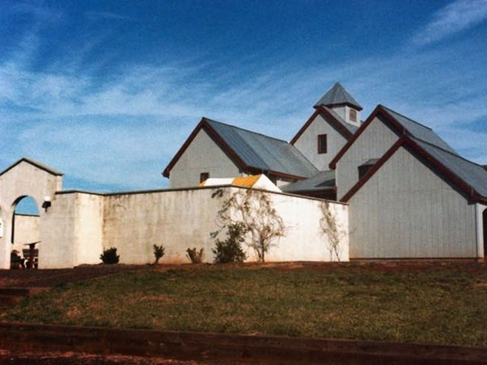
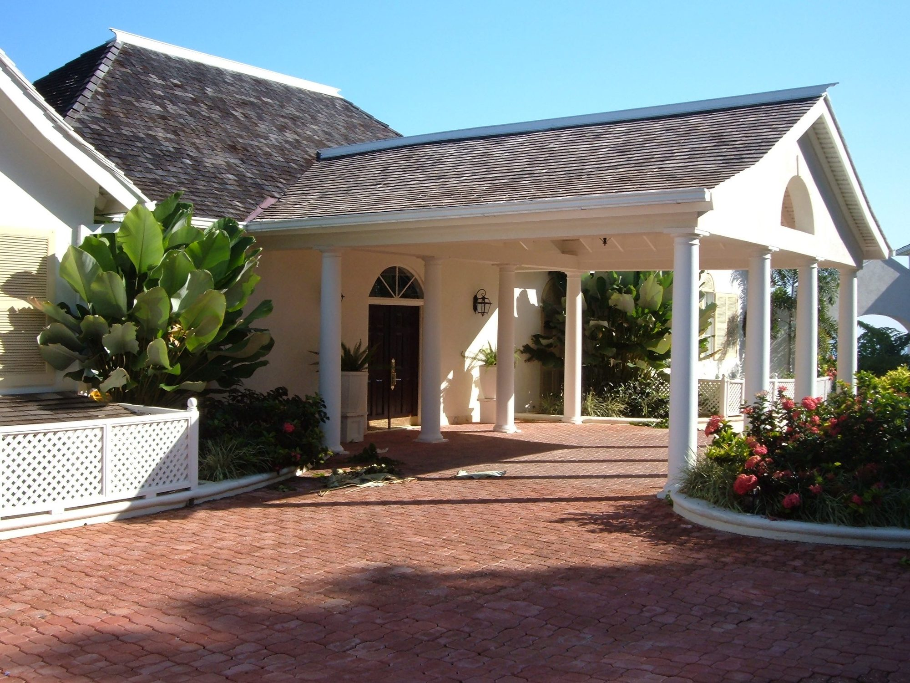
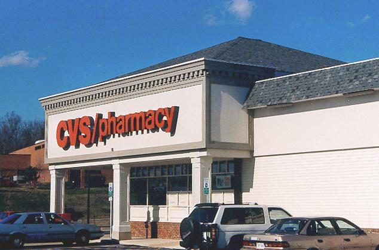
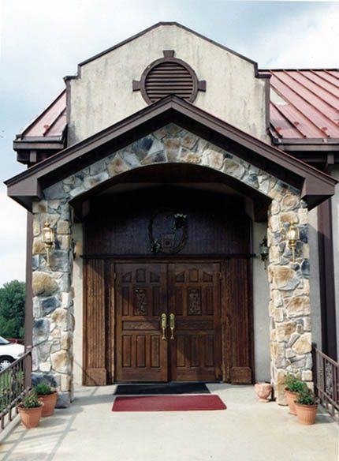

Earth-tempered homes
Earth-tempered design conducts stable temperatures from below the earth's surface into the building. Our Virginia earth-sheltered homes, in mountain and rural settings, have interiors that hover around 65 to 70 °F without air conditioning; small split systems handle humidity.
We have taught owners to build their own homes for over forty years. Our owner-builder masterclass runs online or in person at our Virginia office, from a two-hour “Budgeting your Priorities” session to guidance as you build. The book Building Your Own Earth Tempered Home (Mother Earth News, 1984) is where it began.
In 2018 we donated a two-hour design consultation to the Wild About Art charity auction in Charlottesville.
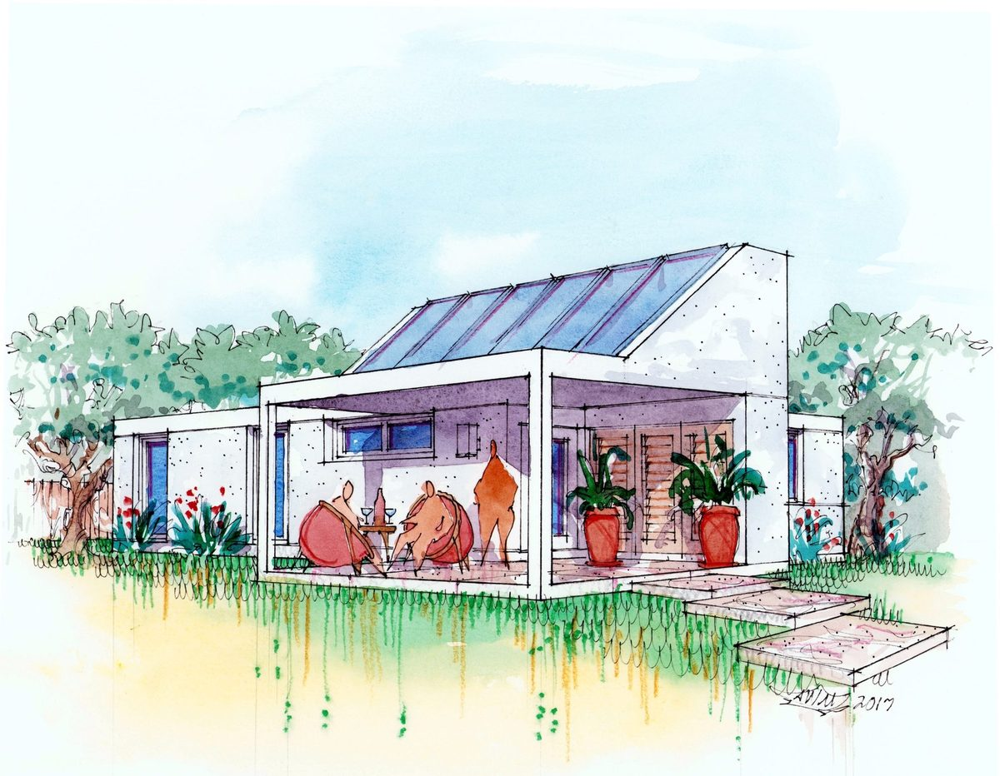
Construction is roughly 18% of what a building costs over its life; heating, cooling and upkeep are the other 82%. Spend wisely on the envelope now, and save 30–50% of that 82% for as long as the building stands.
Angus W. Macdonald trained at Yale and has practiced since 1975. He is an AIA and NCARB member and has spoken at the AIA and the India Ferrocement Society. His son, Angus M. Macdonald, works alongside him as Designer. You work directly with both of us.
M.Arch Yale · AIA · NCARB · USGBC · Licensed in VA, MD, NC, SC, FL and Jamaica
Tested by the real world. Our earth-bermed, ferrocement buildings have been through hurricanes and earthquakes in the Caribbean and the US — with no loss of life and no structural damage. Every one came through Hurricanes Ivan and Sandy. Our Jamaica villas have since stood through Hurricanes Dean, Beryl and Melissa, and a magnitude 7.7 Caribbean earthquake. Otoe Casino, in Red Rock, Oklahoma since 2000, has been through the 2016 Pawnee M5.8 earthquake.
Interactive 3D models (Archicad BIMx) you can walk through on a tablet or phone during design.
Your first consultation is free — in our Culpeper office, by video, or on site if you are nearby. Design is then billed hourly against a retainer, so you pay only for the work your project needs.
Start a projectFrom the drawing board
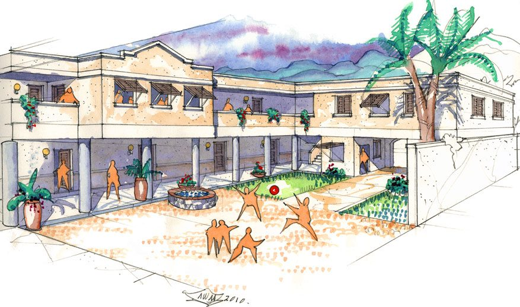
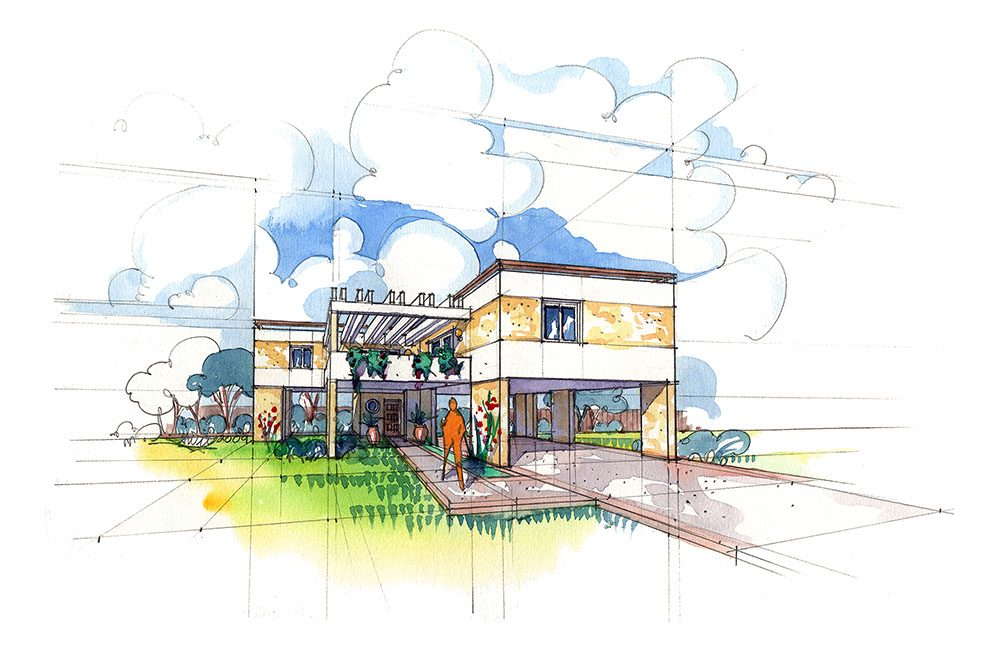
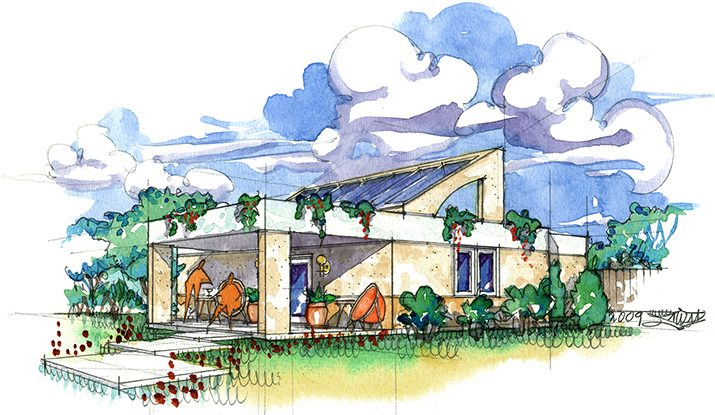
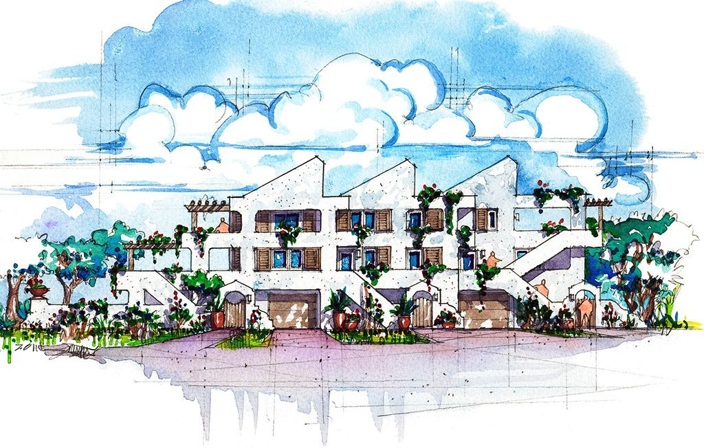
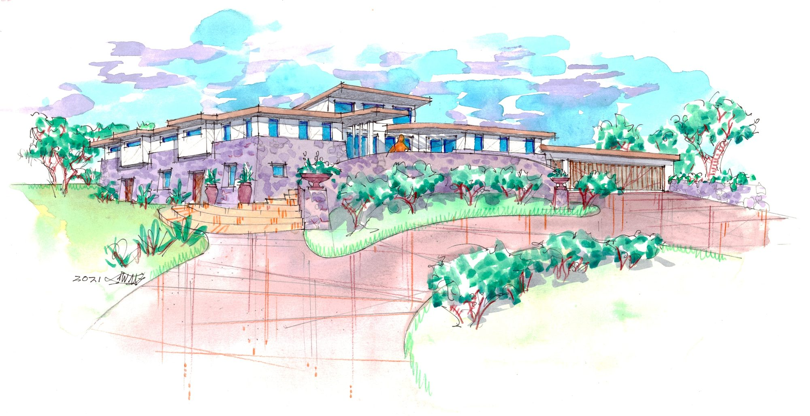
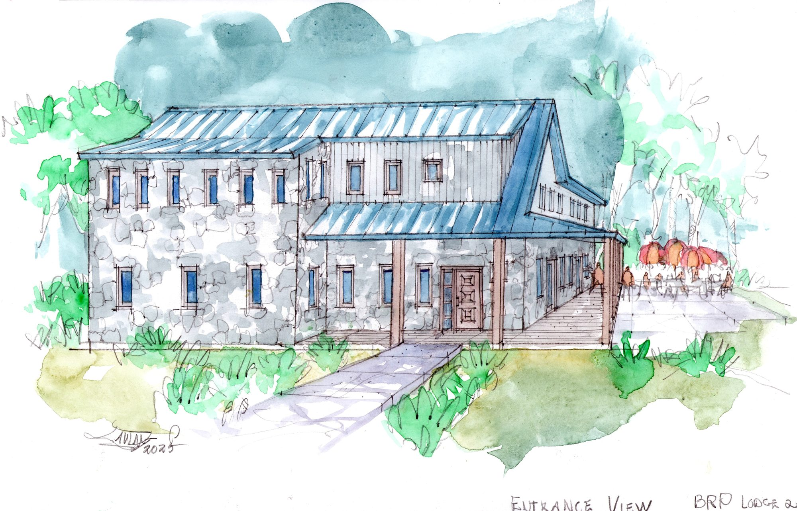